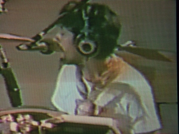
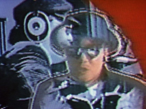
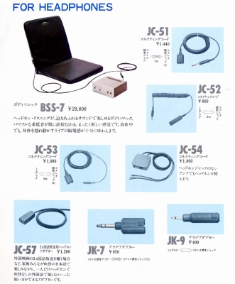
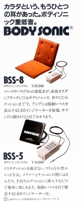
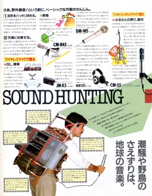
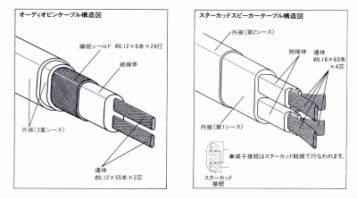
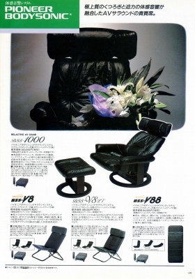
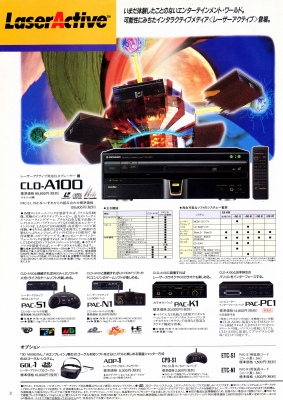
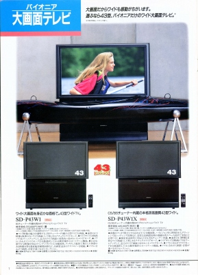

パイオニア カタログギャラリー
(カタログ画像をクリックすると原寸大のPDFファイルが開きます）
�@1960年代？の総合カタログ
当時はさすがにSE-20、SE-30の2機種しかなかった。
�A1971.1月版ヘッドホン総合カタログ
表紙は当時最高級機のSE-50。
�B1973.2月版ヘッドホン総合カタログ
表紙は当時最新鋭のSE-505。
�C1975.4月版ヘッドホン総合カタログ
表紙は当時最新鋭のハイポリマー型SE-900。
�D1975.11月版ヘッドホン総合カタログ
表紙はMONITOR10。同機とその後継モデルは昔の音楽関係の映像によく登場する。


（左 チューリップのライブ映像 右 ムーンライダースのPVより)
�E1979.2月版ヘッドホン/マイクロホン総合カタログ
表紙はEleven(SE-11)。

（当時のヘッドフォンアクセサリー 当時のボディソニックは低音の振動のみ再生し、音楽自体はヘッドフォンで楽しむものだった。また後のAV対応モデルでは標準機能となった、二カ国語対応も当時は別売りのオプションだった）
�F1980.1月版ヘッドホン/マイクロホン総合カタログ
表紙はSE-1000、SE-7、MONITOR10、SE-15。
�G1980.10月版AUDIO
ACCESSORYカタログ
表紙はMaster-1G。
�H1982.11月版AUDIO
ACCESSORYカタログ
表紙はMaster-1GとSE-Ｌ70。このころはパイオニアが「ライトホン」と呼ぶ小型・軽量機しか新型がでなくなっている。


（モデルチェンジしたボディソニックとなにやら怪しげな生録関連のページ）
�I1987.9月版AUDIO ACCESSORYカタログ
表紙はSE-M90。

（このころパイオニアが主力としていたリニアケーブル）
�J1989.4月版AUDIO ACCESSORYカタログ
表紙はSE-919D。このカタログでは発行は「東北パイオニア」となっている。
�K1990.8月版AUDIO ACCESSORYカタログ
表紙はSE-500D。
�M1994.10月版総合カタログ
現在のところ1990年代のパイオニアの資料には大きな穴がある。またこの頃のパイオニアはいろんなジャンルに手を出していてヘッドフォンの扱いは非常に小さい。

（もとはヘッドフォン・アクセサリーだったボディ・ソニックも末期にはこうなっていた）

（今となってはタブーといってもいいレーザーディスクの中の最大のタブー、レーザーアクティブ）

（当時パイオニアが盛んに開発していたリアプロジェクションTV。その前も「SEED」というチューナなしのモニターに挑戦していた。プラズマで惜しまれつつ撤退できて、個人的には良かったと思う）
�N1998.2月版AV ACCESSORYカタログ
ヘッドホン他のカタログだが、先頭の商品はDJ用ヘッドフォンである。